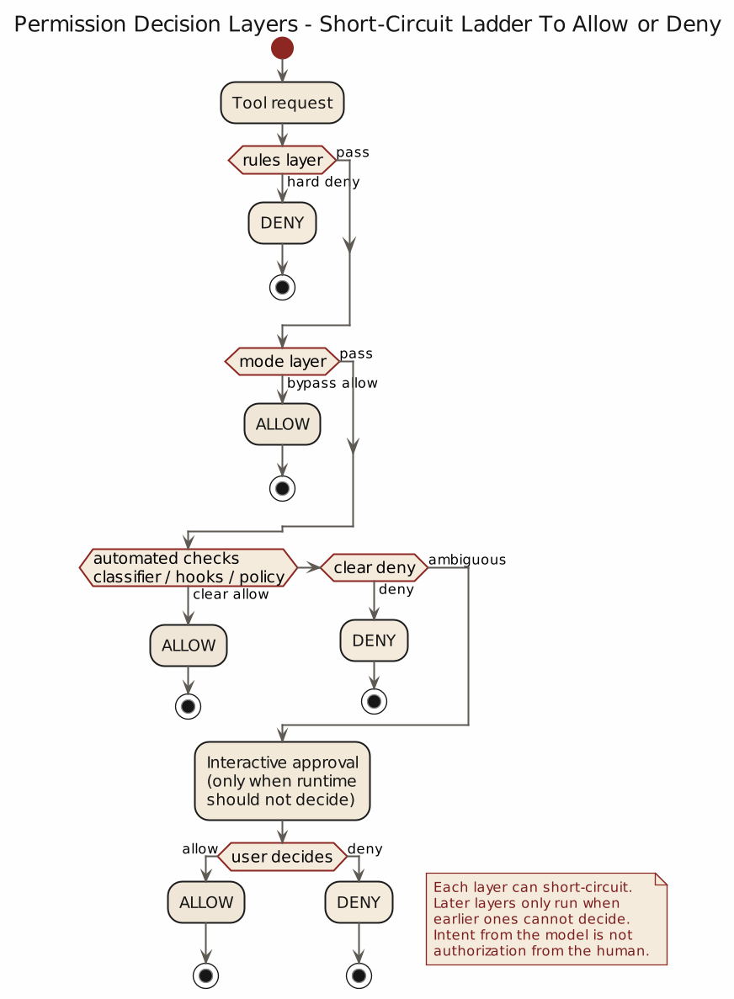
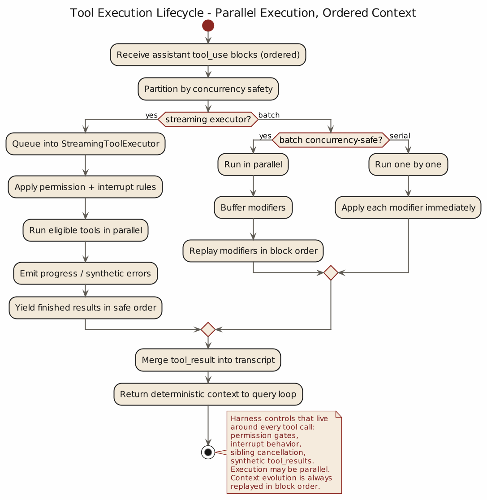

第 4 章 工具、权限与中断：为什么代理不能直接碰世界
4.1 一旦模型开始调用工具，问题的性质就变了
只输出文本的模型，出错时主要增加沟通成本。一旦开始调用工具，问题的性质就变了：工具不是意见，是动作，动作接触真实世界。模型把一段解释写错了，影响还停留在理解层面；跑了一条不该跑的命令，文件会被删掉、进程会被中止、Git 历史会乱。能力增强伴随后果增强。
所以工具系统最重要的问题只有一个：谁来约束这些工具。Claude Code 的回答是把工具变成受管执行接口，避免让模型直接伸手碰世界。
4.2 工具调度属于行为宪法的一部分
Claude Code 在 src/services/tools/toolOrchestration.ts:19 的 runTools() 里，先做了一件很有代表性的事情：不直接执行一串 tool_use，而是先按并发安全性分批。
在 src/services/tools/toolOrchestration.ts:91 的 partitionToolCalls() 里，系统会先读取工具的 inputSchema，再调用 isConcurrencySafe() 判断这类调用是否适合并发。如果适合，就把它们归入并发批次；如果不适合，就拆成串行单元。
这看上去像性能优化，实际更接近一致性设计。一个工具系统一旦允许并发，就必须回答一个老问题：上下文变化由谁决定、按什么顺序生效。Claude Code 在并发路径里没有让最先完成的工具抢先改上下文，而是在 toolOrchestration.ts:31 到 :63 先缓存 contextModifier，再按原始 block 顺序回放。也就是说，即便执行是并发的，语义上的上下文演化仍然保持确定顺序。
这是一种典型的工程保守。它的前提是：并发可以提高吞吐，但不能破坏因果秩序。工具如果只会跑得更快，却不能保证上下文一致性，就会替系统制造另一种随机性。
成熟代理系统不会迷信并发。它会把并发当成需要证明自身无害的例外，而不是默认自由。Claude Code 在这里显然把问题扩散速度考虑得很充分。
4.3 运行一个工具，真正执行前已经发生了很多事
很多人以为 tool_use 一旦出现，下一步自然就是执行。Claude Code 的实现说明，真正靠谱的系统不会这么草率。
在 src/services/tools/toolExecution.ts:30 之后，runToolUse() 所依赖的执行逻辑，已经把 permission、hooks、telemetry、synthetic error materialization 等能力接进来了。即使不追每个细节，只看整体结构也能发现：工具执行在 Claude Code 里是一段完整的流程，包含：
- 前置校验
- 执行中事件
- 执行后修正
- 失败补偿
这说明工具在这里的地位，和普通库函数并不一样。库函数默认属于程序内部，调用者自己承担后果；工具则属于模型与外部世界之间的接口，所以系统不能假设调用者具备稳定判断。换句话说，工具执行周围之所以需要这么多包裹层，是因为调用者本身就是最不稳定的变量。
从设计哲学上说，这一点很重要：工具不应该被建模为“模型能力的延长线”，而应该被建模为“需要运行时代为管理风险的外部能力”。一旦接受这一点，permission、hooks、interrupt、synthetic result 这些结构就更像常识，而不是负担。
4.4 权限先于能力：Claude Code 没把模型当有天然授权的人
Claude Code 的权限入口，在 src/hooks/useCanUseTool.tsx:27 往后。CanUseToolFn 的存在本身已经说明一件事：工具是否允许执行，并不由模型自己说了算，而要交给权限判定链。
在 useCanUseTool() 里，系统不会因为模型提出了一个工具请求，就默认执行。相反，它会先调用 hasPermissionsToUseTool(...) 做权限判定，见 useCanUseTool.tsx:37。返回结果会分成 allow、deny 或 ask。这一点看上去平常，其实很关键。因为真正成熟的权限系统，除了“能”和“不能”，还要承认第三种状态：系统自己也不该替用户做决定。
到了 useCanUseTool.tsx:64 往后，这条链继续分出不同路径：
deny：直接拒绝ask：进入协调器、swarm worker、classifier 或交互式审批路径allow：才真正放行
这意味着 Claude Code 从结构上否认了一种常见且危险的想法：模型懂了用户意图，就等于它有权代替用户执行。事实并非如此。理解意图不等于拥有授权，更不等于拥有持续授权。系统必须把“会做”和“可以做”分开。
从这个角度看，权限系统是在澄清代理角色。Claude Code 允许模型提出动作建议，但是否放行，由运行时、规则和用户决定。系统刻意把能力判断和授权判断分开。
骨架：权限判定链 (skeleton)
// skeleton: useCanUseTool() (src/hooks/useCanUseTool.tsx:27)
decision = hasPermissionsToUseTool(tool, input, ctx)
match decision:
case allow: return exec(tool, input)
case deny: return reject(reason)
case ask: return route_to(coordinator | swarm_worker | classifier | interactive_prompt)
assert decision ∈ {allow, deny, ask} # 三态，不允许布尔偷懒
assert ask never auto-escalates to allow # 无授权不得升级
assert deny is sticky for this tool_use_id # 同一请求不得重试为 allow
4.5 权限结果本身也是一种运行时语义
在 src/utils/permissions/PermissionResult.ts:23 往后，系统甚至给权限行为准备了专门的描述函数：allow、deny、ask。这个细节很重要。它说明权限在 Claude Code 里不只是内部布尔值，而是有独立语义的运行时对象。
这件事之所以重要，是因为权限系统要让系统能够明确地表达“为什么这一步没有继续”。当一个代理说“我需要确认”时，系统是在声明责任边界。责任边界一旦说清楚，后续的拒绝、放行、缓存规则、临时授权、永久授权，才有地方安放。
更直接地说，一个代理系统如果连“这一步是我能做、不能做，还是需要问”的区别都说不清，就不该碰终端。因为终端不会替系统补完语义，终端只会执行。
4.6 StreamingToolExecutor 说明中断是一等语义
工具一旦开始并发和流式执行，中断问题就会立刻变得复杂。此时系统面对的是一个包含 queued、executing、completed、yielded 等多状态的队列，而不再只是单一动作。
Claude Code 在 src/services/tools/StreamingToolExecutor.ts:34 往后，明确把这套东西做成了一个独立的流式工具执行器。这里面最值得注意的是它如何处理中断和丢弃。
在 StreamingToolExecutor.ts:64 到 :70，系统允许在 streaming fallback 时整体 discard 当前工具集合；在 :153 到 :205，它会根据不同原因生成 synthetic error message，包括：
- sibling error
- user interrupted
- streaming fallback
到了 :210 往后，系统还会专门判断中断原因，区分：
- 因为别的并行工具出错而取消
- 因为用户 interrupt 而取消
- 因为 fallback 而放弃当前批次
更细一点，在 :233 往后，工具还有 interruptBehavior，决定它在用户插话时究竟该 cancel 还是 block。
这套设计的意义很大。它说明 Claude Code 并不把中断理解成“执行失败的一种特殊情况”，而是把中断当成和执行本身同样重要的语义。系统不仅要知道工具能不能开始，还要知道它被打断时如何收场、如何补齐结果、是否允许新消息插入。
这正是 Harness Engineering 的一个基本特点：不仅设计开始，也设计停下。没有停下语义的执行系统，最终只能依赖用户外部打断来补完设计。
并发与中断的失败顺序矩阵 (failure matrix)
| 事件顺序 | 前置状态 | 触发 | 下一步 |
|---|---|---|---|
| 并发批内单个工具失败 | sibling 仍在 executing | sibling error | 其它工具照常；按 block 顺序回放 contextModifier |
用户插话 + interruptBehavior=cancel |
工具尚未完成 | user interrupt | 取消执行，生成 user interrupted synthetic result |
用户插话 + interruptBehavior=block |
工具尚未完成 | user interrupt | 继续工具至自然终点，阻塞新消息 |
| streaming fallback | 批次 queued/executing | fallback | discard 整批，按顺序 yield fallback synthetic result |
abort 时有 pending tool_use |
任意 | abort signal | 补齐 synthetic tool_result，账本闭环 |
| Bash 多段复合命令超过 subcommand 上限 | classifier 拒绝 | safety check | deny，不进入 ask 路径 |

4.7 Bash 为什么永远比别的工具更可疑
在 Claude Code 的工具世界里，Bash 不是普通工具，它更像风险放大器。原因很简单：它过于通用。越通用的接口，越难靠领域知识限制它。一个 file read tool 至少不会顺手杀进程，一个 grep tool 至少不会偷偷 push 代码，而 Bash 几乎什么都能做。
Claude Code 对 Bash 的不信任，写得相当实在。
一层是在 prompt 上，见 src/tools/BashTool/prompt.ts:42 往后。这里对 git、PR、危险命令、hook、force push、interactive flags 这些事情写了大量明确规则。那段 prompt 看上去啰嗦，实际上很有分寸：凡是后果大的地方，系统就不怕啰嗦。
另一层是在权限和安全判定上。src/tools/BashTool/bashPermissions.ts:1 往后整整一大段，都在处理 shell 语义、命令前缀、重定向、wrapper、安全环境变量、classifier 与规则匹配。你从 bashPermissions.ts:95 往后甚至能看到系统为了防止复合命令导致检查失控，还专门给 subcommand 数量设了上限。
这说明，Bash 在 Claude Code 里一直被视为需要特殊审查的危险通道，不是普通的命令入口。工程师在这里承认了一件简单的事实：Bash 很强，所以必须被当成特例。
这是一个值得借鉴的判断。高风险能力不应该享受通用能力的待遇。能力越通用，越要特殊看管。把 Bash 当成普通工具，往往只是设计上的偷懒。
4.8 工具系统真正保护的，不只是用户，还包括系统自己
权限、调度和中断看起来像是在保护用户，其实它们同时也在保护系统自身。因为一个代理系统如果允许自己留下这些问题——不完整的 tool_result、失序的上下文修改、无边界的并发副作用、说不清楚的中断语义——最终最先崩掉的往往是系统的一致性。
这一点在 query.ts 里和工具执行层是互相咬合的。前一章提到，query loop 在中断时会补齐 synthetic tool_result；这一章看到，StreamingToolExecutor 也在内部预留了 discarded、hasErrored、siblingAbortController、interruptBehavior 等机制。两边一起作用，目的是让系统在“执行过什么、没执行完什么、为什么停了”这些问题上还能保持一条可追溯的因果链。
这也是 Harness 的核心含义之一：替系统保住秩序。很多约束表面上是在防止误操作，更深一层是在防止系统自己变成一堆无法解释的状态残片。
4.9 从源码里可以提炼出的第四个原则
这一章最后可以压成一句话：
工具是受管执行接口；权限是代理系统的基本器官。
Claude Code 的源码在几个地方共同支持这个判断：
toolOrchestration.ts把工具先分批，再执行，说明调度先于冲动toolExecution.ts把 hooks、permission、telemetry 和 synthetic error 包在工具执行周围，说明执行不是裸调用useCanUseTool.tsx把权限结果分成allow / deny / ask，说明系统把授权当成独立语义StreamingToolExecutor.ts为中断、fallback、并发出错预留专门语义，说明停止和开始同样重要BashTool/prompt.ts与bashPermissions.ts对 Bash 采取特殊高压治理，说明高风险能力必须接受更密约束
提炼成工程原则：模型提建议不等于拥有授权；并发要保持因果秩序；中断必须有一等语义；Bash 这类高风险工具按特例治理；工具系统保护的既是用户，也是运行时本身。
下一章要讨论的是这套系统里另一种常见错觉：上下文越多越好。Claude Code 的实现恰好说明，真正有经验的系统不会把上下文当仓库，而会把它当资源。接下来要讲的，是 memory、CLAUDE.md 与 compact 如何共同组成上下文治理。